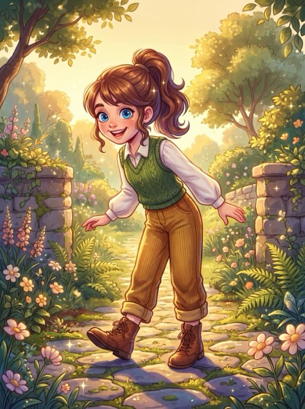
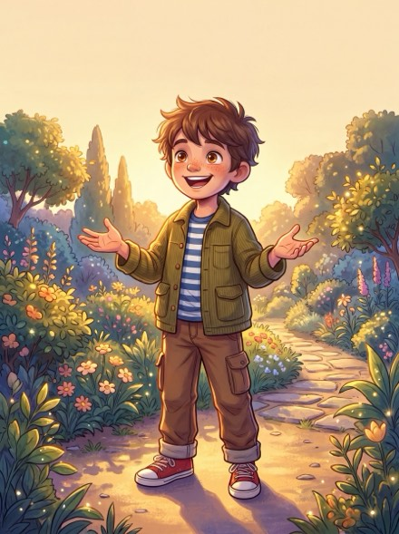

The Detective Kit
This kit is bonus material for The Curious Museum Mysteries, the picture book featuring detectives Nova and Milo.
Everything here is free. Print only the pages you want — the case sheets work in black and white.
Download the kit (PDF)
About 18 MB — on mobile data, you may want to wait for wifi.
What is inside
- A case grid for building your own mystery (page 7)
- The case grid again, plus a clue card (pages 8–9)
- A story about Nova, Milo and Pip (pages 2–3)
- Posters, a detective card and a certificate (pages 4–6 and 12)
- Thirty-five items to cut out (page 10)
- Four suspect cards to fill in (page 11)
Nova, Milo and Pip
Nova and Milo solve the cases in this book. Pip is Nova's dog. He is small and white and so fluffy that he looks like a cloud with eyes.


Looking for more brain training? Crestiora Books publishes puzzle books too, available on Amazon.